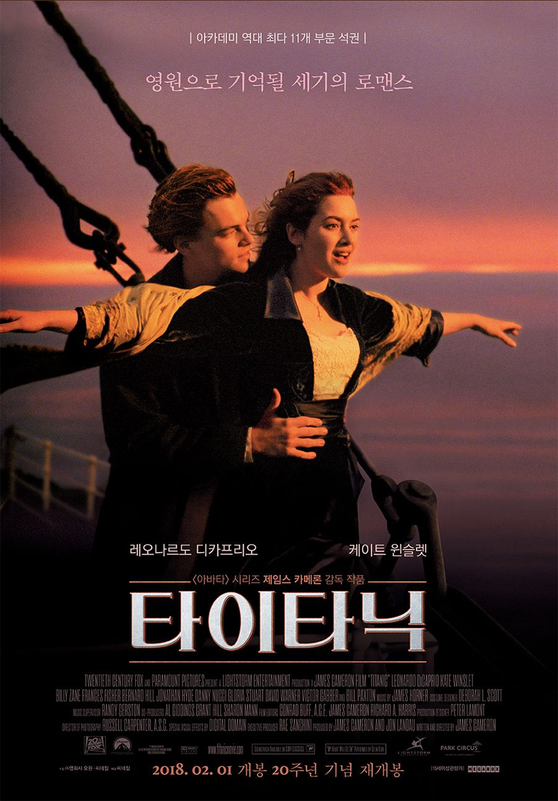
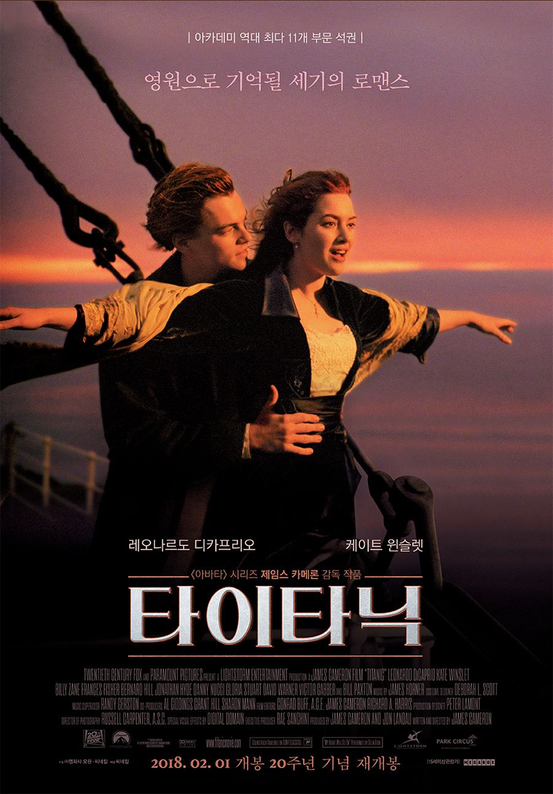
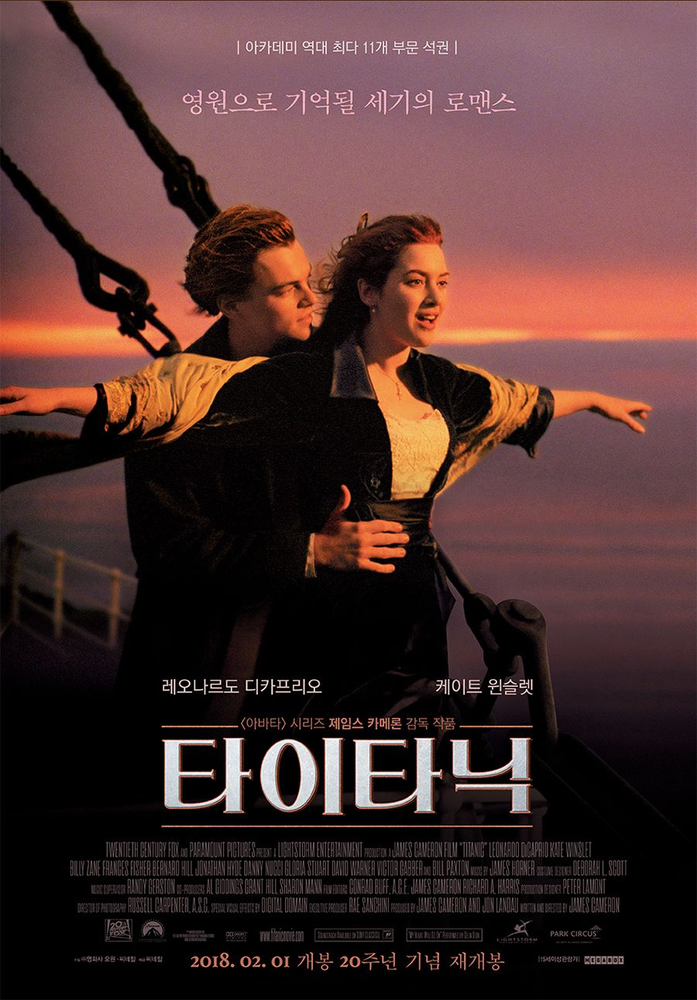

favorite movie
좋아하는 영화
타이타닉
(1997년 포스터) (2012년 포스터)

(2018년 포스터) (2023년 재개봉 포스터)
등장인물
OST
비하인드
재개봉
-예고편-

 (1997년 포스터) (2012년 포스터)

(1997년 포스터) (2012년 포스터)

 (2018년 포스터) (2023년 재개봉 포스터)
(2018년 포스터) (2023년 재개봉 포스터)